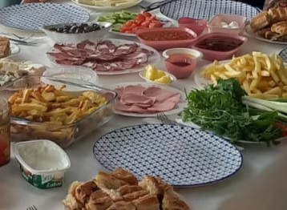

Jak przystało na mieszkańców regionu Śródziemnomorskiego lubimy dużo, często i smacznie zjeść. Nasze dzienne posiłki składają się ze śniadania, kolacji oraz wielu drobnych przekąsek w ciągu dnia.
Z rana, tak jak na każdym tradycyjnym tureckim stole, mamy:
- Oliwki
- Gotowane lub smażone jajka
- Pieczywo
- Owoce
- Różne rodzaje serów, takie jak
- kaszar
- czeczil
- taze peynir
Napoje to:
- kawa
- herbata
- woda
Kolacja dla nas nie jest zwyczajnym posiłkiem, tylko czasem spędzanym z rodziną po długim dniu pracy i nauki. Przygotowywane dania się różnią w zależnoci od pory roku. Zawsze mamy świeże owoce i ważywa. Wyjątek stanowią jagody sezonowe, takie jak truskawki, arbuzy itp.
| Lato | Jesień | Zima | Wiosna | |
|---|---|---|---|---|
| Wołowina | średnio | dużo | mało | |
| Baranina | dużo | |||
| Drób | mało | |||
| Ryby | nie | średnio | dużo | średnio |
Po każdej kolacji oraz w ciągu dnia zjadamy również dużo najróżniejszych miejscowych smakołyków, takich jak orzechy, suszone owoce i tureckie słodycze.
Niestety nasza dieta przeczy wszystkim zasadom prawidłowego odżywania, dlatego od czasu do czasu próbujemy zmieniać swe przyzwyczajenia kulinarne i się odchudzać, ale niestety na razie bezskutecznie.
Więcej informacji na temat tureckiej kuchni znajdziemy tu .